规定初始像素覆盖已通过独立数据验收，完整12步与物理安全未通过。Prescribed initial pixel coverage passes the independent DATA audit; full12-step and physical acceptance remain incomplete. Original1280×720; no edits/crop. Every image below is INITIAL, not micro1/final.
{"seed": 3, "proposal_id": 2124, "global_id": 32844, "family": 0}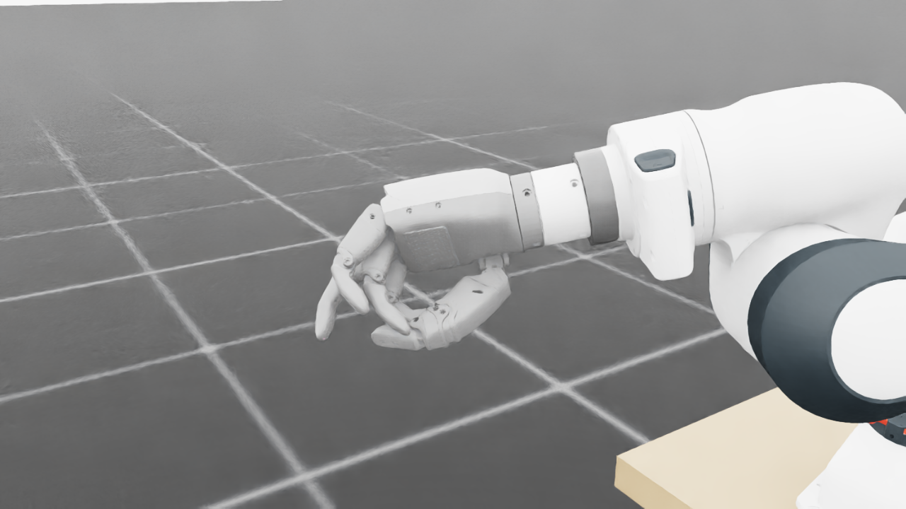
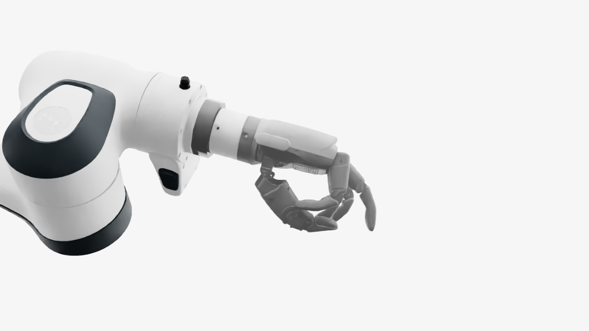
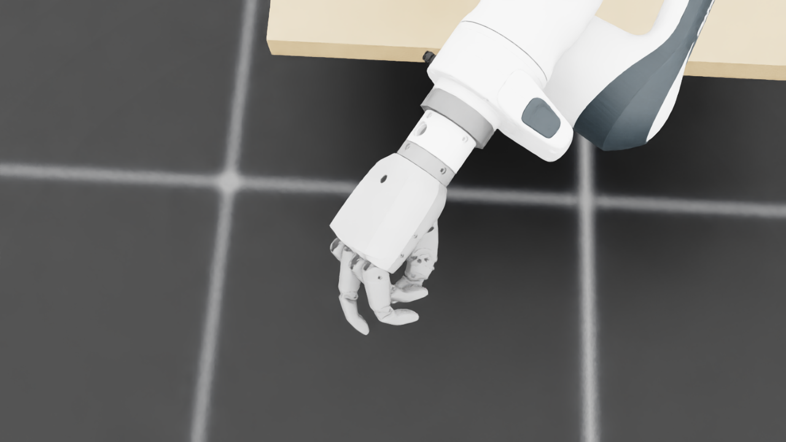
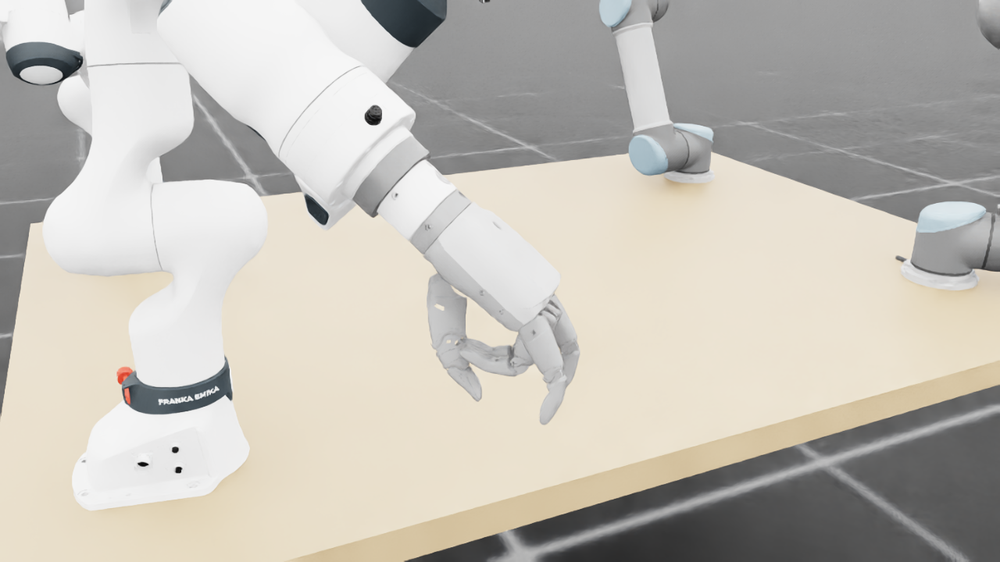
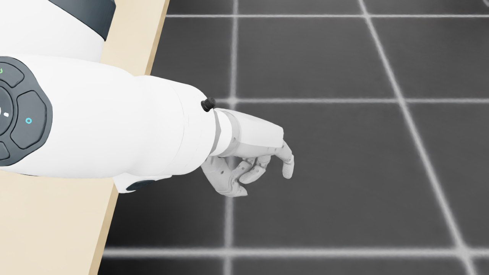
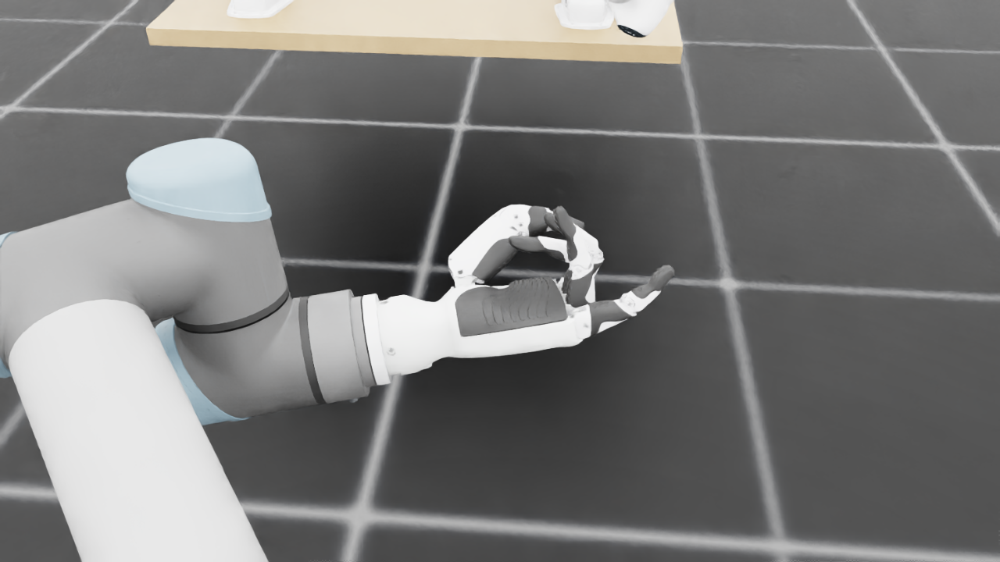
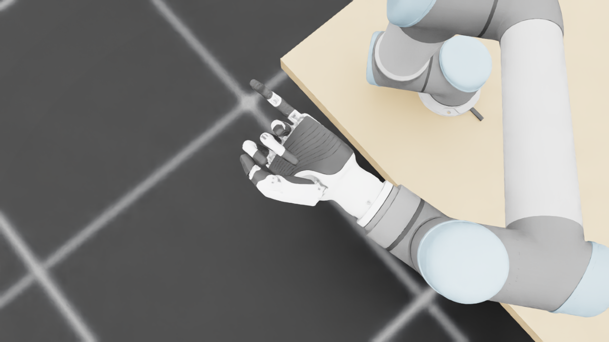
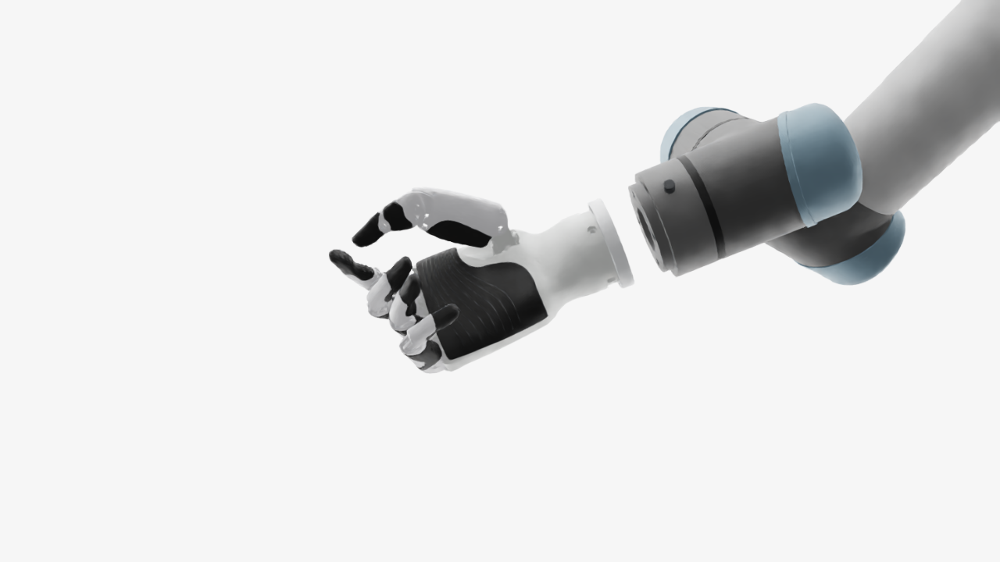
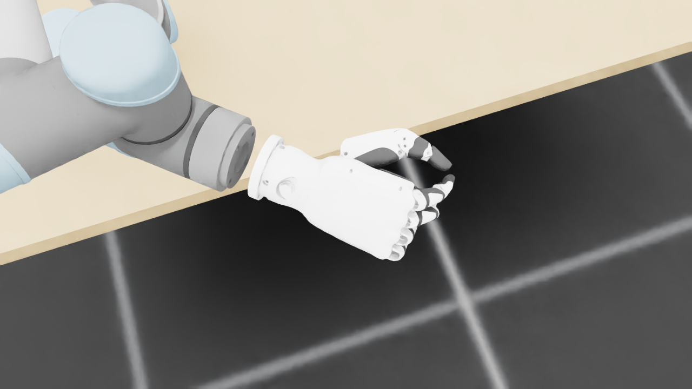
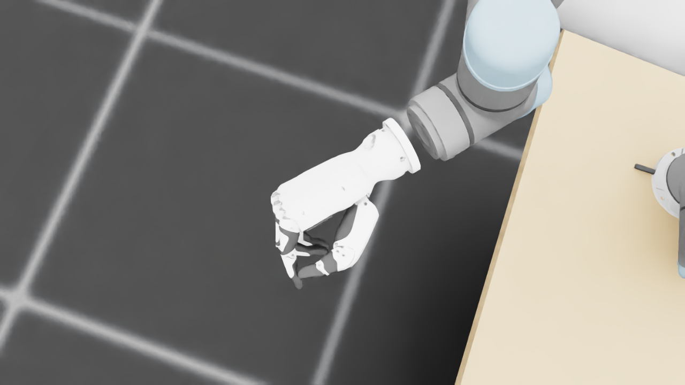
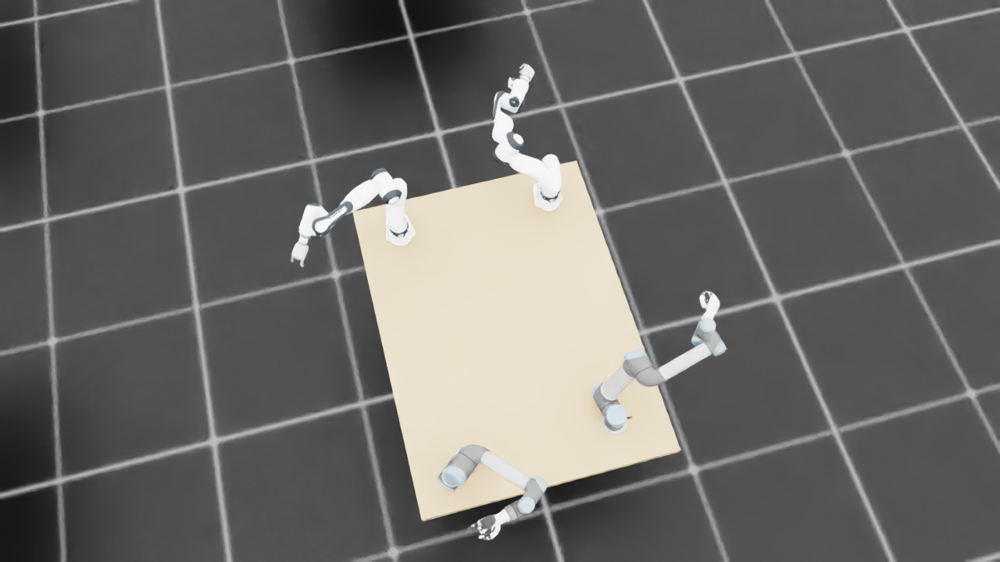
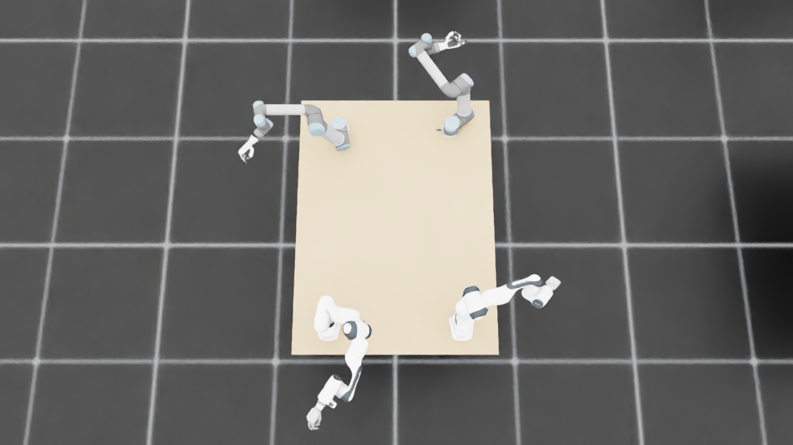
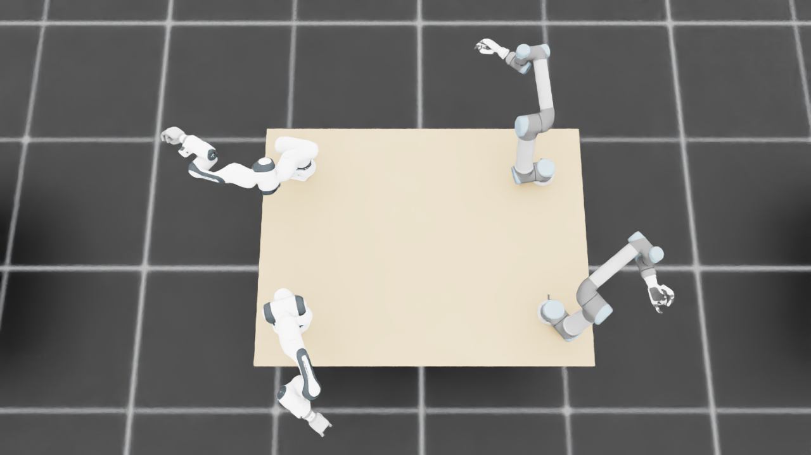
{
"qualified": true,
"arms": {
"F_L": {
"qualified": true,
"palm_visual_peak_pixels": 25300,
"finger_family_peak_pixels": {
"thumb": 10871,
"index": 5922,
"middle": 3777,
"ring": 4258,
"little": 5820
},
"per_native_body_peak_pixels": {
"/World/envs/env_25/F_L/f2_hand/left_hand_base": 33884,
"/World/envs/env_25/F_L/f2_hand/left_index_1": 3500,
"/World/envs/env_25/F_L/f2_hand/left_middle_1": 1888,
"/World/envs/env_25/F_L/f2_hand/left_pinky_1": 3649,
"/World/envs/env_25/F_L/f2_hand/left_ring_1": 1848,
"/World/envs/env_25/F_L/f2_hand/left_thumb_1": 1147,
"/World/envs/env_25/F_L/f2_hand/left_index_2": 2422,
"/World/envs/env_25/F_L/f2_hand/left_middle_2": 2313,
"/World/envs/env_25/F_L/f2_hand/left_pinky_2": 2171,
"/World/envs/env_25/F_L/f2_hand/left_ring_2": 2410,
"/World/envs/env_25/F_L/f2_hand/left_thumb_2": 6034,
"/World/envs/env_25/F_L/f2_hand/left_thumb_3": 2592,
"/World/envs/env_25/F_L/f2_hand/left_thumb_4": 1840
},
"native_body_visibility_gaps": [],
"all_native_hand_bodies_observed": true,
"full_mesh_coverage_certified": false,
"all_recorded_attempt_peak": {
"qualified": true,
"palm_visual_peak_pixels": 25300,
"finger_family_peak_pixels": {
"thumb": 10871,
"index": 5922,
"middle": 3777,
"ring": 4258,
"little": 5951
},
"per_native_body_peak_pixels": {
"/World/envs/env_25/F_L/f2_hand/left_hand_base": 33884,
"/World/envs/env_25/F_L/f2_hand/left_index_1": 3500,
"/World/envs/env_25/F_L/f2_hand/left_middle_1": 1888,
"/World/envs/env_25/F_L/f2_hand/left_pinky_1": 3863,
"/World/envs/env_25/F_L/f2_hand/left_ring_1": 1848,
"/World/envs/env_25/F_L/f2_hand/left_thumb_1": 1147,
"/World/envs/env_25/F_L/f2_hand/left_index_2": 2422,
"/World/envs/env_25/F_L/f2_hand/left_middle_2": 2313,
"/World/envs/env_25/F_L/f2_hand/left_pinky_2": 2171,
"/World/envs/env_25/F_L/f2_hand/left_ring_2": 2410,
"/World/envs/env_25/F_L/f2_hand/left_thumb_2": 6034,
"/World/envs/env_25/F_L/f2_hand/left_thumb_3": 2592,
"/World/envs/env_25/F_L/f2_hand/left_thumb_4": 1840
},
"native_body_visibility_gaps": [],
"all_native_hand_bodies_observed": true,
"full_mesh_coverage_certified": false,
"qualification": false
},
"attempts": 4,
"decoded": 4
},
"F_R": {
"qualified": true,
"palm_visual_peak_pixels": 18411,
"finger_family_peak_pixels": {
"thumb": 9432,
"index": 4290,
"middle": 3460,
"ring": 2790,
"little": 4210
},
"per_native_body_peak_pixels": {
"/World/envs/env_25/F_R/f2_hand/right_hand_base": 23782,
"/World/envs/env_25/F_R/f2_hand/right_index_1": 2523,
"/World/envs/env_25/F_R/f2_hand/right_middle_1": 1589,
"/World/envs/env_25/F_R/f2_hand/right_pinky_1": 2827,
"/World/envs/env_25/F_R/f2_hand/right_ring_1": 947,
"/World/envs/env_25/F_R/f2_hand/right_thumb_1": 642,
"/World/envs/env_25/F_R/f2_hand/right_index_2": 1767,
"/World/envs/env_25/F_R/f2_hand/right_middle_2": 1871,
"/World/envs/env_25/F_R/f2_hand/right_pinky_2": 1402,
"/World/envs/env_25/F_R/f2_hand/right_ring_2": 1965,
"/World/envs/env_25/F_R/f2_hand/right_thumb_2": 5604,
"/World/envs/env_25/F_R/f2_hand/right_thumb_3": 2021,
"/World/envs/env_25/F_R/f2_hand/right_thumb_4": 1795
},
"native_body_visibility_gaps": [],
"all_native_hand_bodies_observed": true,
"full_mesh_coverage_certified": false,
"all_recorded_attempt_peak": {
"qualified": false,
"palm_visual_peak_pixels": 23025,
"finger_family_peak_pixels": {
"thumb": 9432,
"index": 5007,
"middle": 3649,
"ring": 3764,
"little": 4947
},
"per_native_body_peak_pixels": {
"/World/envs/env_25/F_R/f2_hand/right_hand_base": 28201,
"/World/envs/env_25/F_R/f2_hand/right_index_1": 2965,
"/World/envs/env_25/F_R/f2_hand/right_middle_1": 1644,
"/World/envs/env_25/F_R/f2_hand/right_pinky_1": 3193,
"/World/envs/env_25/F_R/f2_hand/right_ring_1": 1636,
"/World/envs/env_25/F_R/f2_hand/right_thumb_1": 923,
"/World/envs/env_25/F_R/f2_hand/right_index_2": 2042,
"/World/envs/env_25/F_R/f2_hand/right_middle_2": 2005,
"/World/envs/env_25/F_R/f2_hand/right_pinky_2": 1754,
"/World/envs/env_25/F_R/f2_hand/right_ring_2": 2128,
"/World/envs/env_25/F_R/f2_hand/right_thumb_2": 5604,
"/World/envs/env_25/F_R/f2_hand/right_thumb_3": 2021,
"/World/envs/env_25/F_R/f2_hand/right_thumb_4": 1827
},
"native_body_visibility_gaps": [],
"all_native_hand_bodies_observed": true,
"full_mesh_coverage_certified": false,
"qualification": false
},
"attempts": 7,
"decoded": 7
},
"U_L": {
"qualified": true,
"palm_visual_peak_pixels": 12808,
"finger_family_peak_pixels": {
"thumb": 8676,
"index": 2750,
"middle": 2305,
"ring": 3490,
"little": 4230
},
"per_native_body_peak_pixels": {
"/World/envs/env_25/U_L/wrist_3_link": 34901,
"/World/envs/env_25/U_L/left_index_1": 1798,
"/World/envs/env_25/U_L/left_little_1": 2627,
"/World/envs/env_25/U_L/left_middle_1": 590,
"/World/envs/env_25/U_L/left_ring_1": 1687,
"/World/envs/env_25/U_L/left_thumb_1": 334,
"/World/envs/env_25/U_L/left_index_2": 1270,
"/World/envs/env_25/U_L/left_little_2": 1603,
"/World/envs/env_25/U_L/left_middle_2": 1809,
"/World/envs/env_25/U_L/left_ring_2": 1803,
"/World/envs/env_25/U_L/left_thumb_2": 5154,
"/World/envs/env_25/U_L/left_thumb_3": 2387,
"/World/envs/env_25/U_L/left_thumb_4": 1015
},
"native_body_visibility_gaps": [],
"all_native_hand_bodies_observed": true,
"full_mesh_coverage_certified": false,
"all_recorded_attempt_peak": {
"qualified": true,
"palm_visual_peak_pixels": 12808,
"finger_family_peak_pixels": {
"thumb": 8676,
"index": 2750,
"middle": 2305,
"ring": 3490,
"little": 4230
},
"per_native_body_peak_pixels": {
"/World/envs/env_25/U_L/wrist_3_link": 34901,
"/World/envs/env_25/U_L/left_index_1": 1798,
"/World/envs/env_25/U_L/left_little_1": 2627,
"/World/envs/env_25/U_L/left_middle_1": 590,
"/World/envs/env_25/U_L/left_ring_1": 1687,
"/World/envs/env_25/U_L/left_thumb_1": 334,
"/World/envs/env_25/U_L/left_index_2": 1369,
"/World/envs/env_25/U_L/left_little_2": 1603,
"/World/envs/env_25/U_L/left_middle_2": 1809,
"/World/envs/env_25/U_L/left_ring_2": 1803,
"/World/envs/env_25/U_L/left_thumb_2": 5154,
"/World/envs/env_25/U_L/left_thumb_3": 2387,
"/World/envs/env_25/U_L/left_thumb_4": 1015
},
"native_body_visibility_gaps": [],
"all_native_hand_bodies_observed": true,
"full_mesh_coverage_certified": false,
"qualification": false
},
"attempts": 4,
"decoded": 4
},
"U_R": {
"qualified": true,
"palm_visual_peak_pixels": 14503,
"finger_family_peak_pixels": {
"thumb": 10182,
"index": 3542,
"middle": 2502,
"ring": 2146,
"little": 3495
},
"per_native_body_peak_pixels": {
"/World/envs/env_25/U_R/wrist_3_link": 53066,
"/World/envs/env_25/U_R/right_index_1": 2334,
"/World/envs/env_25/U_R/right_little_1": 1584,
"/World/envs/env_25/U_R/right_middle_1": 1568,
"/World/envs/env_25/U_R/right_ring_1": 764,
"/World/envs/env_25/U_R/right_thumb_1": 442,
"/World/envs/env_25/U_R/right_index_2": 1612,
"/World/envs/env_25/U_R/right_little_2": 1911,
"/World/envs/env_25/U_R/right_middle_2": 1910,
"/World/envs/env_25/U_R/right_ring_2": 1649,
"/World/envs/env_25/U_R/right_thumb_2": 6136,
"/World/envs/env_25/U_R/right_thumb_3": 2645,
"/World/envs/env_25/U_R/right_thumb_4": 1259
},
"native_body_visibility_gaps": [],
"all_native_hand_bodies_observed": true,
"full_mesh_coverage_certified": false,
"all_recorded_attempt_peak": {
"qualified": true,
"palm_visual_peak_pixels": 14503,
"finger_family_peak_pixels": {
"thumb": 10182,
"index": 3542,
"middle": 2502,
"ring": 2146,
"little": 3495
},
"per_native_body_peak_pixels": {
"/World/envs/env_25/U_R/wrist_3_link": 67794,
"/World/envs/env_25/U_R/right_index_1": 2334,
"/World/envs/env_25/U_R/right_little_1": 1584,
"/World/envs/env_25/U_R/right_middle_1": 1568,
"/World/envs/env_25/U_R/right_ring_1": 764,
"/World/envs/env_25/U_R/right_thumb_1": 442,
"/World/envs/env_25/U_R/right_index_2": 1612,
"/World/envs/env_25/U_R/right_little_2": 1911,
"/World/envs/env_25/U_R/right_middle_2": 1910,
"/World/envs/env_25/U_R/right_ring_2": 1649,
"/World/envs/env_25/U_R/right_thumb_2": 6136,
"/World/envs/env_25/U_R/right_thumb_3": 2645,
"/World/envs/env_25/U_R/right_thumb_4": 1415
},
"native_body_visibility_gaps": [],
"all_native_hand_bodies_observed": true,
"full_mesh_coverage_certified": false,
"qualification": false
},
"attempts": 4,
"decoded": 4
}
},
"wide": {
"qualified": true,
"per_native_object_peak_pixels": {
"/World/envs/env_25/F_L/fr3_link0": 738,
"/World/envs/env_25/F_L/fr3_link1": 854,
"/World/envs/env_25/F_L/fr3_link2": 1437,
"/World/envs/env_25/F_L/fr3_link3": 1622,
"/World/envs/env_25/F_L/fr3_link4": 2213,
"/World/envs/env_25/F_L/fr3_link5": 1921,
"/World/envs/env_25/F_L/fr3_link6": 1061,
"/World/envs/env_25/F_L/fr3_link7": 497,
"/World/envs/env_25/F_L/fr3_link8": 71,
"/World/envs/env_25/F_L/f2_hand/left_hand_base": 508,
"/World/envs/env_25/F_L/f2_hand/left_index_1": 7,
"/World/envs/env_25/F_L/f2_hand/left_middle_1": 24,
"/World/envs/env_25/F_L/f2_hand/left_pinky_1": 42,
"/World/envs/env_25/F_L/f2_hand/left_ring_1": 11,
"/World/envs/env_25/F_L/f2_hand/left_thumb_1": 0,
"/World/envs/env_25/F_L/f2_hand/left_index_2": 0,
"/World/envs/env_25/F_L/f2_hand/left_middle_2": 26,
"/World/envs/env_25/F_L/f2_hand/left_pinky_2": 35,
"/World/envs/env_25/F_L/f2_hand/left_ring_2": 43,
"/World/envs/env_25/F_L/f2_hand/left_thumb_2": 64,
"/World/envs/env_25/F_L/f2_hand/left_thumb_3": 27,
"/World/envs/env_25/F_L/f2_hand/left_thumb_4": 18,
"/World/envs/env_25/F_R/fr3_link0": 778,
"/World/envs/env_25/F_R/fr3_link1": 768,
"/World/envs/env_25/F_R/fr3_link2": 602,
"/World/envs/env_25/F_R/fr3_link3": 1422,
"/World/envs/env_25/F_R/fr3_link4": 2267,
"/World/envs/env_25/F_R/fr3_link5": 2942,
"/World/envs/env_25/F_R/fr3_link6": 1475,
"/World/envs/env_25/F_R/fr3_link7": 384,
"/World/envs/env_25/F_R/fr3_link8": 85,
"/World/envs/env_25/F_R/f2_hand/right_hand_base": 741,
"/World/envs/env_25/F_R/f2_hand/right_index_1": 26,
"/World/envs/env_25/F_R/f2_hand/right_middle_1": 7,
"/World/envs/env_25/F_R/f2_hand/right_pinky_1": 25,
"/World/envs/env_25/F_R/f2_hand/right_ring_1": 8,
"/World/envs/env_25/F_R/f2_hand/right_thumb_1": 0,
"/World/envs/env_25/F_R/f2_hand/right_index_2": 11,
"/World/envs/env_25/F_R/f2_hand/right_middle_2": 0,
"/World/envs/env_25/F_R/f2_hand/right_pinky_2": 8,
"/World/envs/env_25/F_R/f2_hand/right_ring_2": 0,
"/World/envs/env_25/F_R/f2_hand/right_thumb_2": 2,
"/World/envs/env_25/F_R/f2_hand/right_thumb_3": 0,
"/World/envs/env_25/F_R/f2_hand/right_thumb_4": 0,
"/World/envs/env_25/U_L/base_link": 272,
"/World/envs/env_25/U_L/shoulder_link": 1177,
"/World/envs/env_25/U_L/upper_arm_link": 3201,
"/World/envs/env_25/U_L/forearm_link": 3697,
"/World/envs/env_25/U_L/wrist_1_link": 807,
"/World/envs/env_25/U_L/wrist_2_link": 352,
"/World/envs/env_25/U_L/wrist_3_link": 1058,
"/World/envs/env_25/U_L/left_index_1": 19,
"/World/envs/env_25/U_L/left_little_1": 60,
"/World/envs/env_25/U_L/left_middle_1": 15,
"/World/envs/env_25/U_L/left_ring_1": 43,
"/World/envs/env_25/U_L/left_thumb_1": 8,
"/World/envs/env_25/U_L/left_index_2": 56,
"/World/envs/env_25/U_L/left_little_2": 39,
"/World/envs/env_25/U_L/left_middle_2": 43,
"/World/envs/env_25/U_L/left_ring_2": 41,
"/World/envs/env_25/U_L/left_thumb_2": 158,
"/World/envs/env_25/U_L/left_thumb_3": 72,
"/World/envs/env_25/U_L/left_thumb_4": 29,
"/World/envs/env_25/U_R/base_link": 243,
"/World/envs/env_25/U_R/shoulder_link": 971,
"/World/envs/env_25/U_R/upper_arm_link": 3645,
"/World/envs/env_25/U_R/forearm_link": 3006,
"/World/envs/env_25/U_R/wrist_1_link": 718,
"/World/envs/env_25/U_R/wrist_2_link": 440,
"/World/envs/env_25/U_R/wrist_3_link": 696,
"/World/envs/env_25/U_R/right_index_1": 50,
"/World/envs/env_25/U_R/right_little_1": 4,
"/World/envs/env_25/U_R/right_middle_1": 11,
"/World/envs/env_25/U_R/right_ring_1": 13,
"/World/envs/env_25/U_R/right_thumb_1": 6,
"/World/envs/env_25/U_R/right_index_2": 30,
"/World/envs/env_25/U_R/right_little_2": 18,
"/World/envs/env_25/U_R/right_middle_2": 21,
"/World/envs/env_25/U_R/right_ring_2": 16,
"/World/envs/env_25/U_R/right_thumb_2": 128,
"/World/envs/env_25/U_R/right_thumb_3": 50,
"/World/envs/env_25/U_R/right_thumb_4": 22,
"/World/envs/env_25/TableF": 86080,
"/World/envs/env_25/TableU": 88783
},
"arm_peak_pixels": {
"F_L": 11117,
"F_R": 10095,
"U_L": 11147,
"U_R": 10015
},
"table_peak_pixels": {
"TableF": 86080,
"TableU": 88783
},
"critical_body_peak_pixels": {
"/World/envs/env_25/U_L/forearm_link": 3697,
"/World/envs/env_25/U_L/wrist_2_link": 352,
"/World/envs/env_25/U_R/forearm_link": 3006,
"/World/envs/env_25/U_R/wrist_2_link": 440
}
},
"raw_attempt_count": 30,
"PNG_count": 30,
"angle_records": 30,
"max_actual_angle_identity_error_deg": 0.0,
"held_snapshot_checks": 532,
"universal_visibility_impossible": false,
"full_mesh_coverage_certified": false
}